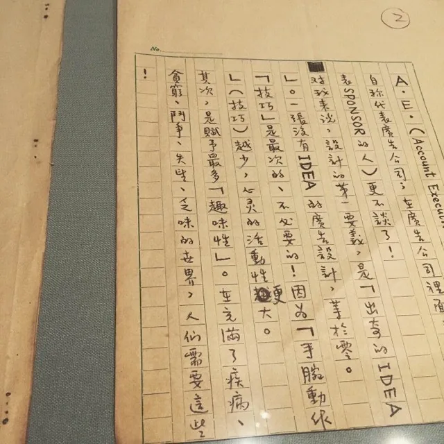
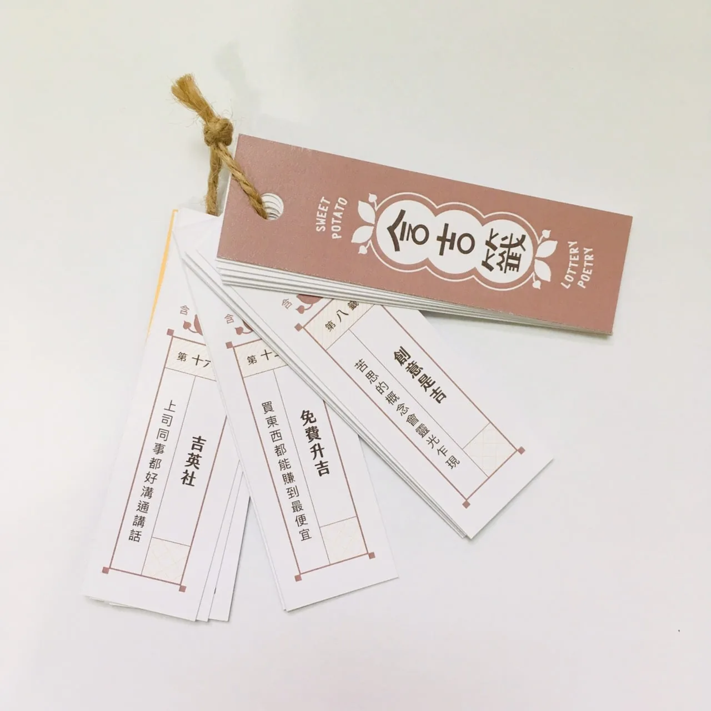

部落格 · 閱讀&生存報告
日常記事｜關於創作，比技巧更重要的是……
大家有沒有過這種經驗：在美術館看展時，作品的創作方式過於簡單，讓人忍不住腹誹：「這個我也做得到啊！」
雖然很簡單，卻能呈現深意、傳達內涵，簡單的形式實際隱含了巧思，確實誰都做得到，但不是誰都想得到可以這樣做。
對我來說，設計的第一要義，是「出奇的Idea」。一張沒有Idea的廣告設計，等於零。
「技巧」是最次要的、不必要的！因為「手腕動作」（技巧）越少，心靈的活動度更大。－黃華成
我十分認同這樣的創作理念，並非是要為自己在設計上的能力不精開脫，而是以前偶有遇到展現自身技巧重於傳達意義的人。用都築響一在《圈外編輯》的話來說，就是：「就像是買了客製化設計的住宅，住起來卻很不舒服，彷彿被迫欣賞建築師的『作品』似的。」

當然我也認同，在不需要服務他人的情況下，創作者絕對可以盡情揮灑、創作。
如果是純粹的個人創作，在外部價值(註)我將其分成兩類。一是表現、媒材、形式……等，前所未見的突破與新嘗試；二是藉由創作傳達想法，例如議題、現象、觀念、反思……等。但偶有在「作品理念」說明其欲傳達的想法，卻以一種十分自我而他人難以理解的作品呈現。（註：至於內部價值，有點像是無用之用，產生價值的對象是自己。）
「他真正希望的到底是什麼呢？」我忍不住想。
不勉強自己「誰就該景仰」
我曉得有一些作品，作者什麼也沒想，他就是照自己認為地去創作而已，而作品卻能貼近、擊中觀者內心深處。可有時候，有些作品對我來說就是「沒有感覺」，是不是他其實更側重於嘗試一種新的表現形式，而非達到理念傳達？我猜想，有些創作者其實沒有弄清楚位置。
或許是枝裕和的這個概念能夠帶來一些啟發：
比起以我的存在為中心來思考世界，如果以世界為中心來思考，而將我視為其中的一部分，就會有一百八十度的差異。－是枝裕和《宛如走路的速度：我的日常、創作與世界》
「但他展示在國家級的美術館耶，是不是我太淺了看不懂？」
直到某個時刻，我也累了，承認自己對作品的期待或偏好、承認自己沒感覺，不再說服自己了解作品、強迫透過作品理念再詮釋作品，假裝自己懂、有資格擠身藝術產業。或許因為前面這些努力，我很擅長透過作品理念、創作者背景解讀作品，差點跨入藝術產業，但最後退縮了。
誠如前面提及對於作品偏好的認知，也反映了自己在藝術產業上想扮演的位置。幾年前，還在環境NGO工作的時候，和同事規劃課程時，他舉例：「我們是希望在這門課中，讓3個人願意加入推廣環境保育的行列，還是讓20個人建立環境保育的粗淺概念？」這兩種目標其實沒有對錯，只是要回頭去看活動的目的為何、組織的優勢和能量適合發展哪個面向。
而在藝術推廣上，我希望讓大家接觸的作品，是不需要做一大堆功課就可以懂的，就是希望「有20個人（更多人）能享受作品的況趣」。在台北，可能覺得藝文活動隨處可見，但與某些縣市的落差，甚至大到這端看不到那端的程度。
10年前在嘉義，半年也等不到一檔新的展覽，現在雖進步不少了（嘉義美術館在9月開幕了！），但我想這個資源差異仍然難以消弭。
我認為創作的下一步是……
在看《未完成，黃華成》的隔天，我去了台創祭，攤位有許多自製的原創商品，小說、漫畫、海報、Zine、飾品、各種手工藝，類型十分多樣化，我第一次逛這種類型的展（原創only）大概也是約10年前，多年未參加，這次仍舊有一些以前關注的創作者參加。
和當年相比，以繪圖創作來說，技術、完成度有全面性的提升（這個活動可能也跟當年參與活動的定位比較不同？），有一些讓人眼睛一亮的商品，但更多的是一成不變。
「除了畫得好看、精緻度高外，還有呢？」
是不是傳達了一些知識、議題？
是不是嘗試了不同的印刷紙材？
是不是設計了一個迷人的世界觀？
說不清我這些年經歷了什麼(?)，我在乎的部分已經不只是畫風獨特、構圖穩定、精緻度高而已。世俗一點說，作品的獨創性、故事性、呈現手法等面向，是這個階段的我願意掏錢買的東西。
如同黃華成認為「Idea才是設計的第一要義」般，我想知道、也希望更多有趣的Idea被嘗試實踐。

後記：
這裡指的創作，是泛指所有無中生有的作品，無關作品展示的場域。
寫這些東西，也是讓我再再忍不住想：這是為我自己的學藝不精開脫嗎？可能我才是創作世界的逃兵也說不定？